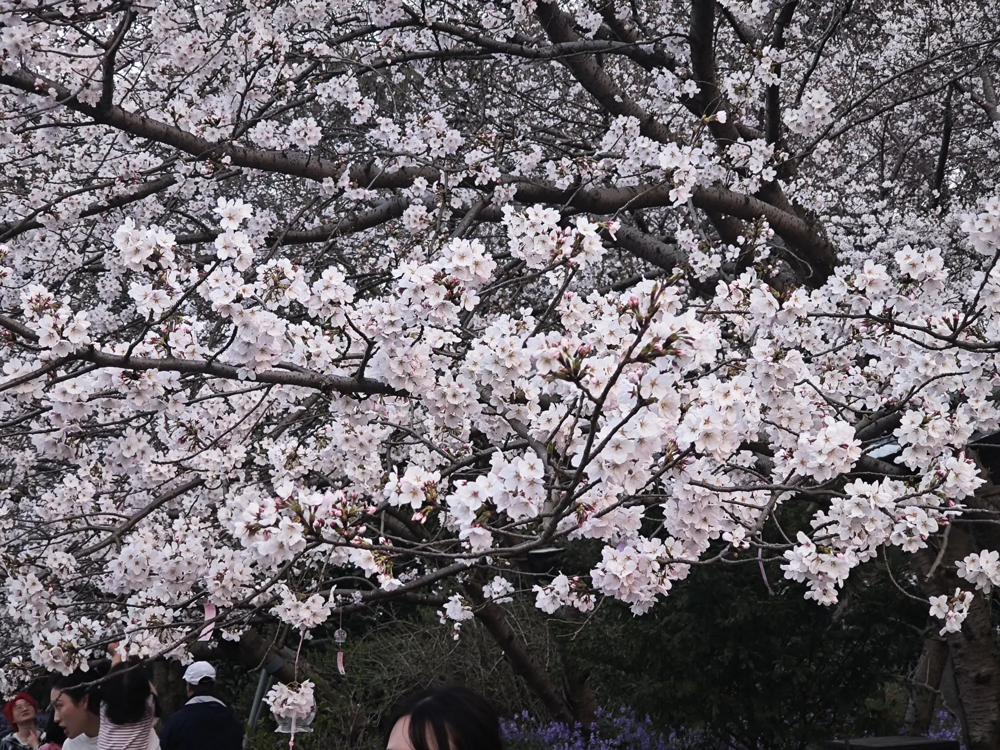

DAY 01
鼋头渚 · 太湖樱花
铁路、公交、游船在太湖边看园林、塔影与春樱，乘船看湖面，夜幕降临后赏夜樱，再乘列车返程。

WUXI / YUANTOUZHU
春日的太湖、帆影与鼋头渚的樱花，从白天看到夜晚。
春日的太湖、帆影与鼋头渚的樱花，从白天看到夜晚。
THE JOURNEY
选择一天，联动地图与照片。
公共交通按线路或途经站点绘制，均为行程示意；未记下的具体班次留空。航班连线非实际飞行轨迹。
在太湖边看园林、塔影与春樱，乘船看湖面，夜幕降临后赏夜樱，再乘列车返程。
MOMENTS TO KEEP
暂无照片。